Computer Modeling (OCN 682)
Intro to Shiny Apps
UH Fall 2026
2026-10-20
Intro to Shiny Apps
- What is Shiny and why use it?
- Basics of user interface
- Basics of the server
- Reactive objects
- Resources for Shiny Themes, dashboard, publishing your app
- Tidy Tuesdays!

What is Shiny?
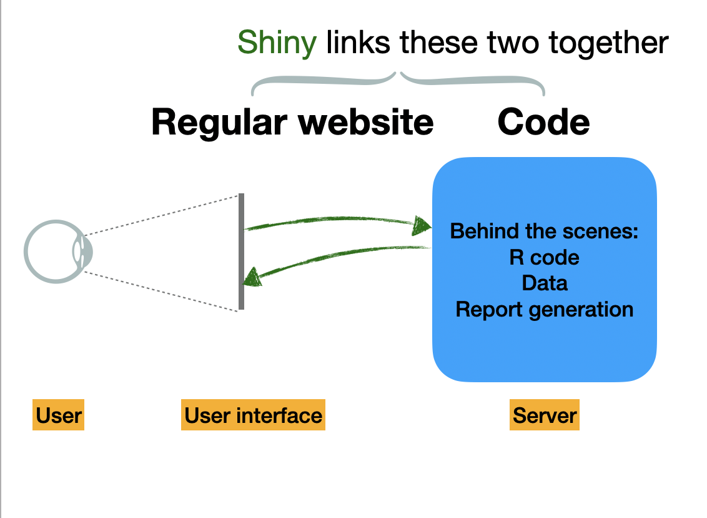
When is Shiny Useful?
When we want to make R code accessible outside of an R or RStudio environment. For example:
- Teaching a package
- Showing data visualizations to non-experts
- Streamlining certain code-intensive things (like database queries or visualizing bulky simulation outputs)
Examples
- Teaching population growth models Population Dynamics Lab
- Visualize model projections Marine Mammal Bycatch model Siple et al. (2022) Journal of Open Source Software
- To have fun

Starting a New Shiny App
Note
Your Shiny app needs to be in its own folder, and the folder name is the name of the app. It is really best for it to be its own standalone repo, but for today create your own folder in your lastname repo.
Install shiny: if you have the most recent RStudio it should already be installed.
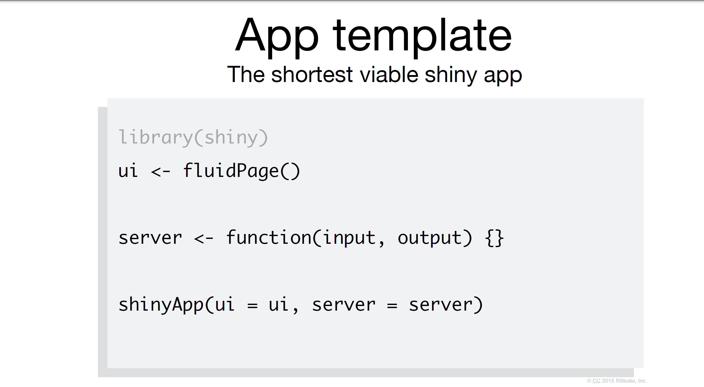
Each Shiny App Has Two Components
The ui (user interface) object dictates the appearance of the app. UI functions write HTML. For something to appear in your app, it needs to be in the UI.
The server() function contains rendering expressions that create the objects to display.
The server function and UI object are passed to the shinyApp() function to create a Shiny app object.
Warning
When saving the script in your app, create a folder with the name of your app and then save the script as app.R. You MUST save the script with this name for it to work. Also, all files associated with your app must be in this folder.
Add Elements to Your App as Arguments to fluidPage
Not a very exciting app, but an app no less!
Start an App in RStudio
From the RStudio IDE, pick New File -> Shiny Web App
You can choose between single (app.R) or multiple files (ui.R and server.R)
Does it matter which one you choose?
Note
Not really. Some people like the organization of having multiple files. But it really doesn’t make a difference!
This has a lot of helpful start code, but we are going to start from scratch today.
Build App Around Inputs/Outputs
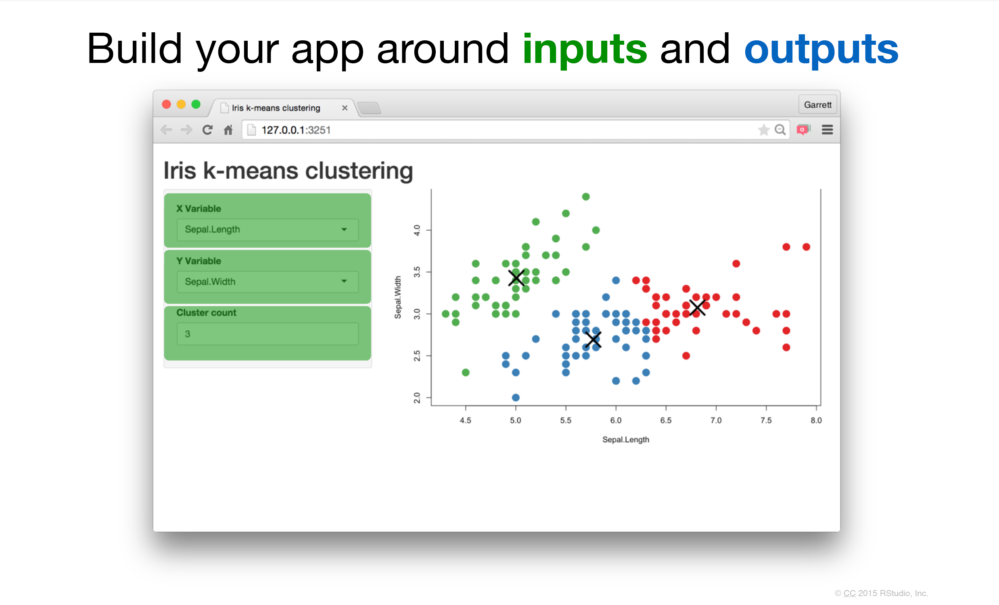
Build App Around Inputs/Outputs
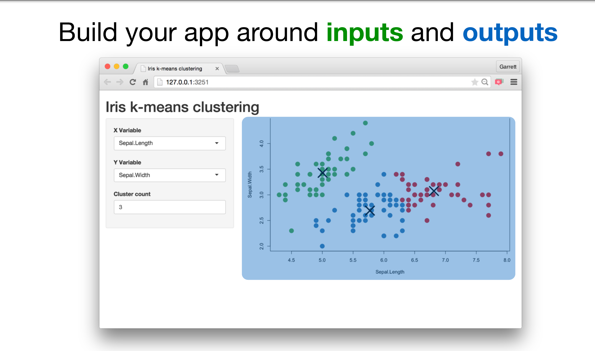
Add Elements to Your App Using fluidPage()
Create an Input with a *Input Function
There are many types of inputs and the syntax for all of them is typeInput. To make a slider we use sliderInput().
These inputs make a bunch of HTML code behind the scene:
Creates this code behind the scenes:
<div class="form-group shiny-input-container">
<label class="control-label" for="num">Choose a number</label>
<input class="js-range-slider" id="num" data-min="1" data-max="100"
data-from="25" data-step="1" data-grid="true" data-grid-num="9.9"
data-grid-snap="false" data-prettify-separator="," data-keyboard="true"
data-keyboard-step="1.01010101010101"/>
</div>Let’s Create an Input with Our Input Function
Start with our blank app. Then we add our slider into the user interface.
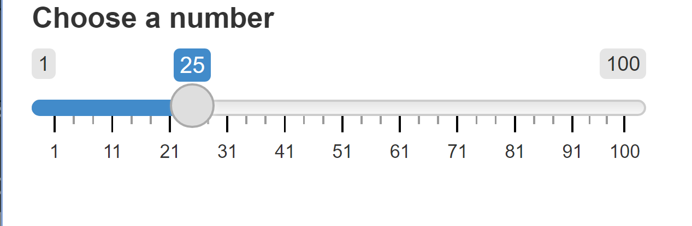
We have a beautiful slider. It doesn’t do anything yet, but we made it!
So Many Shiny Widget Options for Inputs
Even More Options!
Syntax
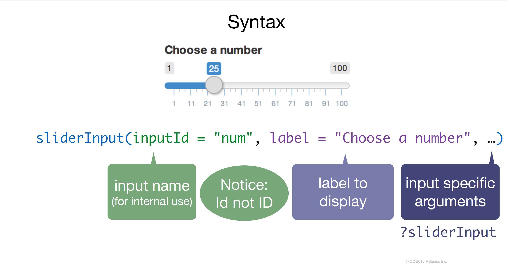
Outputs
Outputs
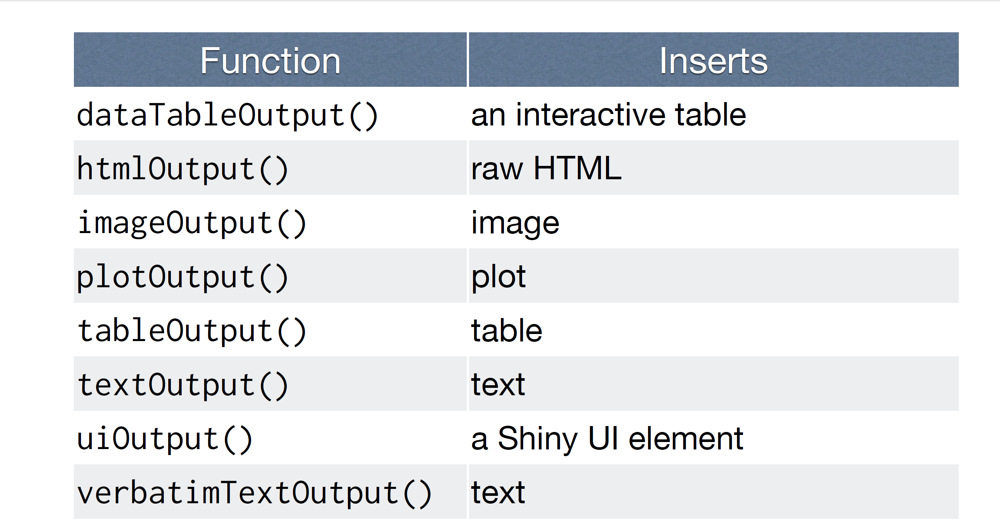
*Output()
To display an output add it to fluidPage() with an *Output() function
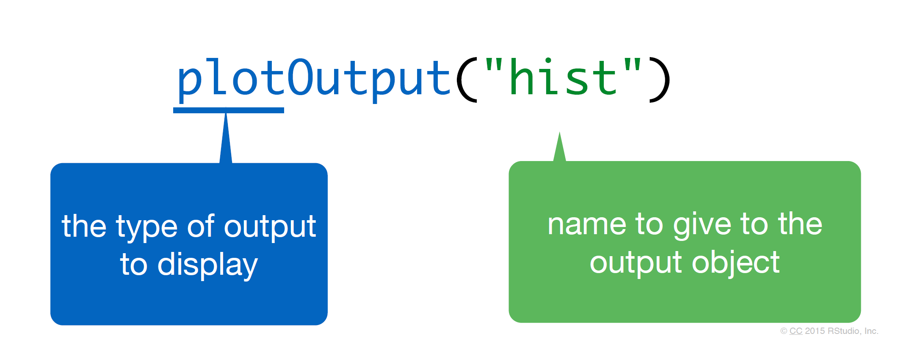
Let’s Add It to Our UI
Tip
You must add a comma between objects.
library(shiny)
ui <- fluidPage(
sliderInput(inputId = "num", # ID name for the input
label = "Choose a number", # Label above the input
value = 25, min = 1, max = 100 # values for the slider
),
plotOutput("hist") # creates space for a plot called hist
)
server <- function(input, output){}
shinyApp(ui = ui, server = server)This code creates the space for a new plot, but nothing happens yet.
The Server
What is the server? Mostly, R code. This is where the vegan meat of your app is located.
Use 3 Rules to Write the Server Function
Rule 1. Save Objects to Display to output$
Look back to the ui, hist is spelled identically to the name in the plotOutput() function:
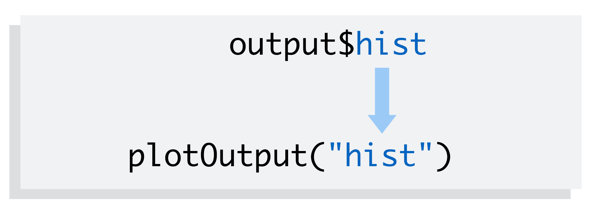
Rule 2. Build Objects to Display with render*({})
Many Types of Renders
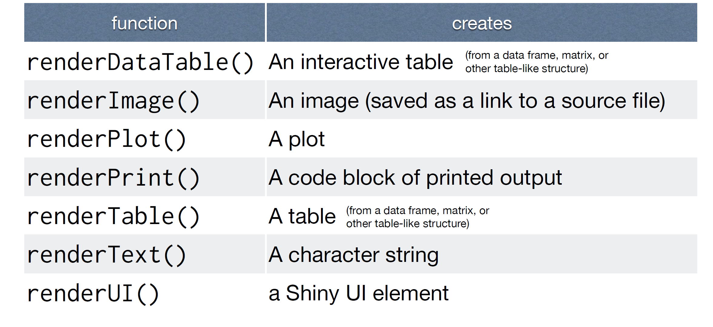
Render a Plot
This will create a static plot first. Also we are using ggplot so add in the tidyverse:
library(shiny)
library(tidyverse)
ui <- fluidPage(
sliderInput(inputId = "num", # ID name for the input
label = "Choose a number", # Label above the input
value = 25, min = 1, max = 100 # values for the slider
),
plotOutput("hist") # creates space for a plot called hist
)
server <- function(input, output){
output$hist <- renderPlot({
# {} allows us to put all our R code in one nice chunk
data <- tibble(x = rnorm(100)) # 100 random normal points
ggplot(data, aes(x = x)) + # make a histogram
geom_histogram()
})
}
shinyApp(ui = ui, server = server)Rule 3. Access the input Values with input$
We are going to replace 100 with input$num. Notice that num comes from what we put in our inputId. Exact same spelling.
library(shiny)
library(tidyverse)
ui <- fluidPage(
sliderInput(inputId = "num", # ID name for the input
label = "Choose a number", # Label above the input
value = 25, min = 1, max = 100 # values for the slider
),
plotOutput("hist") # creates space for a plot called hist
)
server <- function(input, output){
output$hist <- renderPlot({
# {} allows us to put all our R code in one nice chunk
data <- tibble(x = rnorm(input$num)) # number of points set by the slider
ggplot(data, aes(x = x)) + # make a histogram
geom_histogram()
})
}
shinyApp(ui = ui, server = server)You Made Your First App!

Let’s Add Two Types of Inputs
Let’s say we want to write an input where the user can create whatever title they want by typing it into a box. Let’s update our ui to have a textInput():
ui <- fluidPage(
sliderInput(inputId = "num", # ID name for the input
label = "Choose a number", # Label above the input
value = 25, min = 1, max = 100 # values for the slider
),
textInput(inputId = "title", # new Id is title
label = "Write a title",
value = "Histogram of Random Normal Values"), # starting title
plotOutput("hist") # creates space for a plot called hist
)Now Let’s Update the Server to Change the Title of the Plot
server <- function(input, output){
output$hist <- renderPlot({
# {} allows us to put all our R code in one nice chunk
data <- tibble(x = rnorm(input$num)) # number of points set by the slider
ggplot(data, aes(x = x)) + # make a histogram
geom_histogram() +
labs(title = input$title) # add a new title
})
}Create Two Outputs
Let’s say we want to add a data table below the histogram that has all the summary statistics. We need to add another ui element that creates a place to put the table. We will use verbatimTextOutput():
ui <- fluidPage(
sliderInput(inputId = "num", # ID name for the input
label = "Choose a number", # Label above the input
value = 25, min = 1, max = 100 # values for the slider
),
textInput(inputId = "title", # new Id is title
label = "Write a title",
value = "Histogram of Random Normal Values"), # starting title
plotOutput("hist"), # creates space for a plot called hist
verbatimTextOutput("stats") # create a space for stats
)Now Update the Server to Calculate the Summary Stats
Here, we will use renderPrint():
server <- function(input, output){
output$hist <- renderPlot({
# {} allows us to put all our R code in one nice chunk
data <- tibble(x = rnorm(input$num)) # number of points set by the slider
ggplot(data, aes(x = x)) + # make a histogram
geom_histogram() +
labs(title = input$title) # add a new title
})
output$stats <- renderPrint({
summary(rnorm(input$num)) # calculate summary stats based on the numbers
})
}Cleaning the Code
Here, we used input$num twice: once in the plot and once in the summary stats. This actually created two separate random distributions and the stats actually are not directly related to the plots. We need to build a reactive object so the same dataframe is being used throughout all the code.
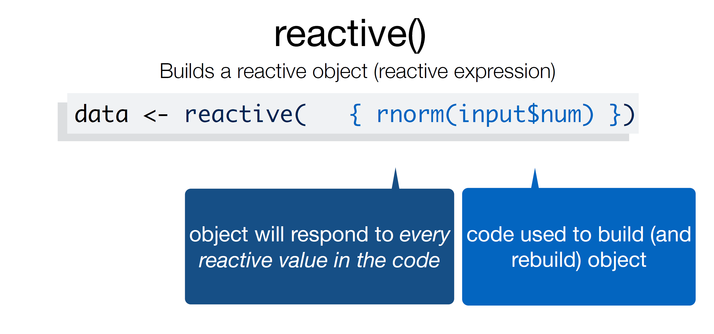
A Reactive Object is Special in Two Ways
- You call a reactive object like a function:
- Reactive expressions cache their values, making your app run much faster.
Reactive Object
library(shiny)
library(tidyverse)
ui <- fluidPage(
sliderInput(inputId = "num", # ID name for the input
label = "Choose a number", # Label above the input
value = 25, min = 1, max = 100 # values for the slider
),
textInput(inputId = "title", # new Id is title
label = "Write a title",
value = "Histogram of Random Normal Values"), # starting title
plotOutput("hist"), # creates space for a plot called hist
verbatimTextOutput("stats") # create a space for stats
)
server <- function(input, output){
data <- reactive({
tibble(x = rnorm(input$num)) # number of points set by the slider
})
output$hist <- renderPlot({
ggplot(data, aes(x = x)) + # make a histogram
geom_histogram() +
labs(title = input$title) # add a new title
})
output$stats <- renderPrint({
summary(rnorm(input$num)) # calculate summary stats based on the numbers
})
}
shinyApp(ui = ui, server = server)Warning
Careful! A reactive object must be called like a function. ggplot(data, ...) on line 23 is wrong — the plot needs ggplot(data(), ...). Forgetting the parentheses is one of the most common Shiny errors (“object of type ‘closure’ is not subsettable”).
Reactive Object: Use data()
server <- function(input, output){
data <- reactive({
tibble(x = rnorm(input$num)) # number of points set by the slider
})
output$hist <- renderPlot({
ggplot(data(), aes(x = x)) + # make a histogram
geom_histogram() +
labs(title = input$title) # add a new title
})
output$stats <- renderPrint({
summary(data()) # calculate summary stats based on the numbers
})
}
shinyApp(ui = ui, server = server)Now Let’s Build an App with Real Data
The stars Data
We’ll use the stars.csv file in the data/ folder of our app — sea star counts at 14 intertidal sites, each with its latitude and longitude:
Rows: 14
Columns: 3
$ lat <dbl> 33.548, 35.534, 39.503, 32.863, 33.460, 33.548, 33.603, 34.390…
$ long <dbl> -117.805, -121.083, -123.743, -117.240, -117.671, -117.805, -1…
$ star_no <dbl> 10, 1, 25, 22, 8, 3, 15, 23, 4, 7, 35, 21, 14, 17Note
Put your data file inside the app folder — remember, all files associated with your app must live in the same folder so they get published too.
Add a selectInput to Set a Minimum Count
selectInput(inputId, label, choices) creates a dropdown menu. We’ll use it to pick a minimum count of sea stars:
library(shiny)
library(tidyverse)
ui <- fluidPage(
selectInput(inputId = "min_stars", # ID name for the input
label = "Show sites with at least this many sea stars:",
choices = c(1, 5, 10, 20), # threshold options
selected = 5 # the threshold that shows first
),
plotOutput("star_map") # creates space for the map
)
server <- function(input, output){}
shinyApp(ui = ui, server = server)Filter the Data in the Server
Use filter() inside a reactive to keep only the sites that meet the threshold. Each point is a site, sized by the number of sea stars counted there:
server <- function(input, output){
kept_sites <- reactive({
stars |>
# selectInput returns choices as STRINGS, so convert back to numeric!
filter(star_no >= as.numeric(input$min_stars)) # sites above threshold
})
output$star_map <- renderPlot({
ggplot(kept_sites(), aes(x = long, y = lat)) +
geom_point(aes(size = star_no), color = "red") + # points sized by count
labs(size = "Sea stars counted")
})
}
shinyApp(ui = ui, server = server)Tip
The filter() lives inside reactive(), so the map re-filters every time the user picks a new threshold — and both the reactive pattern and the *Input/*Output naming rules are exactly what we just learned with the histogram app.
How to Publish Your Shiny App to Posit Connect Cloud
Your Posit Connect Cloud account is already linked to RStudio — publishing is just a few clicks.
How to Publish Your Shiny App to Posit Connect Cloud
- Run your app locally (source
app.R) so it’s live in the Viewer pane.
- Click the blue Publish button in the Viewer pane.
- In the publishing dialog, choose Posit Connect Cloud as the destination and your account.
- Confirm the files being bundled (make sure
app.Rand any data files are included), then click Publish.
- Watch the deployment progress in the Jobs pane, then open the link to your live app.
Tip
To update your app after changes, just click Publish again — it redeploys to the same content on Connect.
Note
You can also deploy from the console with rsconnect::deployApp().
There is SO Much More You Can Do
Check out these resources:
Intro to shiny
More tutorials
Mastering Shiny — THE BIBLE OF SHINY
RStudio Gallery
Shiny Tutorial
Shiny Widgets
Layout & Theming with {bslib}
{bslib} is the modern way to build app layouts and themes — it replaces the older shinythemes and shinydashboard packages and works with Bootstrap 5.
library(bslib)
ui <- page_sidebar(
theme = bs_theme(bootswatch = "cerulean"), # pick a Bootswatch theme
sidebar = sidebar( # everything in the sidebar
sliderInput(inputId = "num",
label = "Choose a number",
value = 25, min = 1, max = 100),
textInput(inputId = "title",
label = "Write a title",
value = "Histogram of Random Normal Values")
),
card( # main content in cards
card_header("Histogram"),
plotOutput("hist")
),
card(
card_header("Summary statistics"),
verbatimTextOutput("stats")
)
)Homework
Use any data set to make a shiny app. Your app must have at least one dynamic figure and one other output (can be anything). You must publish it on Posit Connect Cloud so that we can view your app online. Put the link in your ReadMe file so that we can easily find and click on it.
Thanks!
Thanks!
Slides created via Quarto
Many slides modified from mine-cetinkaya-rundel
OCN 682 | Week 12 | Intro to Shiny Apps